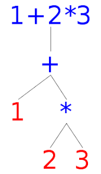

GridFlow
Introduction
GridFlow is a programming language and spreadsheet program written in Ruby with the interface made using the Curses library. Each command (value, mathmatical expression, statistical function, etc) is parsed and tokenized into the GridFlow language. These statements are passed into a parser that assembles them into an Abstract Syntax Tree (a data structure used to executre a program). Finally the command, translated from text into an object in Ruby, is executed and stored in the cell. GridFlow was written as a semester long project for CS 430 - Programming Languages taught by Chris Johnson. This project taught me a lot about different programming language design choices, and the relationship between certain language design features and their impact on how the language is used.
Operations
GridFlow features five primitive types: integers, floats, booleans, strings, and cell addresses. Each expression in GridFlow returns a primitive. Primitives are implemented as an instance of an Expression Object in Ruby. They look like this
a = new IntegerPrimitive(1);
b = new IntegerPrimitive(2);
Primitives are the building block for all operations, which are built as a combination of primitives and other operations. The primitives created above can be combined into an arithmetic operation like this
a = new IntegerPrimitive(1);
b = new IntegerPrimitive(2);
added = new ArithmeticOperation(a, b);
Since primitives and operations are both Expression Objects in my code, they can be further combined
a = new IntegerPrimitive(1);
b = new IntegerPrimitive(2);
added = new ArithmeticOperation(a, b);
c = new IntegerPrimitive(3);
multiplied = new MultiplicationOperation(added, c);
Here we are starting to see pieces of the puzzle coming together. added contains the expression "1 + 2" and multiplied contains added and 3, unpacking to "1 + 2 * 3". This expression can be represented as a graph like this

This graph, called an Abstract Syntax Tree (AST) is at the heart of programming language design. Programmers love trees because we can write code that interacts with them in many different ways. For GridFlow, ASTs are the intermediate step between the text and an evaluated expression. As we go on we will discuss various ways we use these Trees to build our executed GridFlow expressions.
Each expression in GridFlow is represented as one of these graphs (though that graph gets complicated quickly!). Now we simply traverse each node of this graph, solving each sub expression. This is easy for us humans. We start at the bottom seeing the multiplication expression equals 6, then we move up a level and add 1 to 6. Implementing this into our code raises the complexity quickly. The intuitive solution is to add an evaluate method to each object in our tree. This is easy to code for each individual object: primitives return their value, operators evaluate each component and return the evaluated operation. However this raises design issues. When I go to code the evaluate methods, I have to go to all the different objects and write its method. I find the Addition class and write the code that adds, then I go to the multiply class and write the code that multiplies. This is fine when coding a few objects, but gridflow has 35 objects: significantyl raising the difficulty of development. If I am troubleshooting an issue with my evaluation, I would have to go searching through 35 different objects. Fortunately we can solve this using the
Visitor Design Pattern
The "Long Story Short" is that the visitor design pattern allows us write all the like-methods in one spot. Instead of 35 classes that have an evaluate method, we write an Evaluate class that has 35 methods, one for each object. It's still the same amount of code, but easier to write and maintain as it's all grouped together in one spot. It requires creating a new Visitor object with methods for each object.
class Evaluate
func visitIntegerPrimitive(node)
return value
func visitAddition(node)
// evaluate left
// evaluate right
// combine results
Since each method is different for each object, we change our object decleration to call the associated visitor method
class IntegerPrimitive
function visit(visitor)
visitor.visitIntegerPrimitive(self)
Now we just have to call the Evaluate visitor on the entire tree. The visitor object is like a mailman traveling to different houses and delivering the right letters. The Evaluate visitor multiplies when it sees a multiplication object, and adds when it sees an addition object, etc. At this point we have created our expression objects and can traverse our expression tree and evaluate. But how do we get to this point? How do we go from a string of text to an evaluated AST?
Lexing and Parsing
Lexers and Parsers are the code that translates text (a computer program) into some kind of intermediate representation we can further evaluate. In this case the output of the parsing and lexing phase is our AST object. We start by parsing. The lexer goes through the text input and emits tokens. Tokens are the smallest individual units of source code. We seperate our text into a list of keywords, literals, and identifiers. Our "1 + 2 * 3" expression we were using above is translated into these tokens:
integer_literal(value = 1)
addition_operator
integer_literal(value = 3)
multiplication_operator
The parser simply emits the tokens it sees in the text. Parsing is more complicated. The parser has to take in the list of tokens and return a single AST object with all its sub-nodes. This step is the most theory heavy part of the project. It requires a formal language definition that we follow closely in our implementation. The whole grammar and parser is too long to cover here, so we will focus on our arithmetic expression. The Grammar is the formal syntax of our Gridflow language. It defines precedance, order of operations, and type safety (no integers added with floats here). The Grammar defines every level of precedance (multiplication before addition, etc) and the associativity of operators (we want our expressions evaluated from left to right). The relevent portion of the GridFlow grammar looks like this
Level1 = Add
Add =
Add "+" Mult
| Mult
Mult =
Mult "*" Number
| Number
Number =
Float
| Integer
This grammar probably looks confusing, and probably deserves its own whole writeup (I've taken multiple classes covering Grammars and Programming Languages and still find it tricky to wrap my head around and very unintuitive) The gist is we use this as the basis for our Parser (our Recursive Descent Parser to be exact). By writing our parser to match the grammar, we tell the parser to build our final AST node to match our desired associativity and precedance.
The parser is similarly complicated, but is quite beatiful in how it reads in a list of tokens and outputs an executable AST tree. The parser checks each level of the grammar until it finds the matching tokens. When it finds syntax that matches the grammar, it returns the relevent expression in its Object form. For our arithmetic expression it looks for an addition sign, then moves down a level to look for multiplication, before finally looking for a number if it finds neither.
The parser chugs along, building small pieces of the tree until it spits out one large AST. This AST contains all parts of the original expression the lexer read in as text. Finally, we pass this tree along to our evaluator to do the work of solving the expression.
The Grammar and Parser probably deserve their own long write-up. Its a fascinating intersection of Computer Science Theory and Software Development and the final product is a beautiful piece of code in my opinion
Wrapping up, I introduced my GridFlow spreadsheet program and gave a behind-the-scences tour of how we go from typing in some text to an evaluated expression. We showed how expressions are represented as trees and used object oriented design principles to efficiently implement them. We showed how these Tree objects are evaluated using the visitor pattern. Finally we learned about Lexers and Parsers and how they translate text into one of these trees. This project was a challenging combination of theory, code design, and creativity. It gave me an appreciation for how all three elements can be combined to create something both fascinating and beutifl.